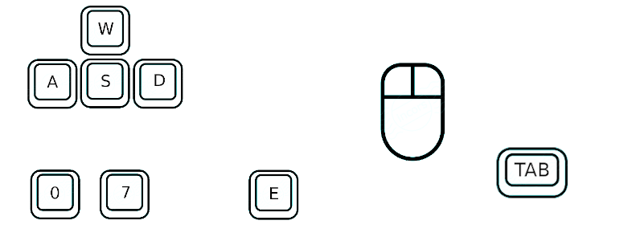

Solaris
Guida all'installazione e Requisiti
Per poter giocare è necessario scaricare il gioco seguendo questo indirizzo o raggiungendo la pagina dell'applet.
Di seguito vengono elencati i requisiti minimi necessari per vivere al meglio l'esperienza di gioco:
- OS: Windows 10, Linux
- Memory: 4GB
- Hard Disk Space:
- Processor: 2.3 GHz Dual Core
- Video Card: Intel HD Graphics 5500
- DirectX:
Comandi
sObiettivo
Per vincere, il giocatore, deve raccogliere le quantità indicate per ciascun materiale:
- Iron: 5 unità
- Tin: 5 unità
- Titanium: 3 unità
- Sulfur: 3 unità
- Gold: 2 unità
- Platinum: 1 unità
È possibile scegliere tre livelli di difficoltà: easy, hard e insane. La scelta di un livello più alto determinerà un consumo più rapido dell'ossigeno. L'unico modo per ricaricare l'ossigeno è attraverso la raccolta di alcune piante, che, inspiegabilmente, crescono sulla superficie arida del pianeta.
Sonar
Per trovare le risorse necessarie, il giocatore può servirsi di un sonar. Questo indicherà la direzione e la distanza esclusivamente attraverso segnali sonori. Ogni materiale diverso risuona a frequenze diverse, dando la possibilità di selezionare uno o più tipi diversi di risorse. La distanza invece, è indicata attraverso la frequenza degli impulsi del sonar, che aumenteranno in frequenza con il diminuire della distanza.